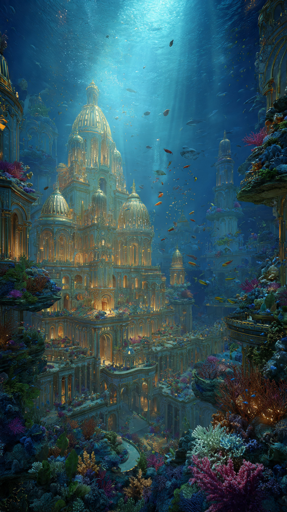
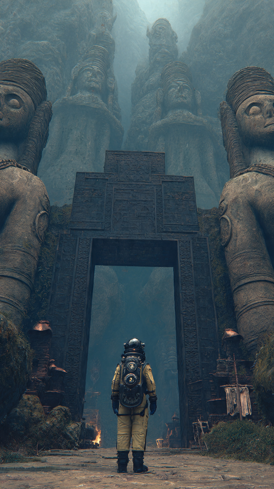

كان البحر بالنسبة لمعظم الناس مجرد مساحة شاسعة من الماء.
لكن بالنسبة للصيادين القدامى، كان يخفي أسرارًا لا ينبغي لأحد أن يعرفها.
فمنذ آلاف السنين، تناقلت الأجيال حكاية عن مملكة عظيمة ابتلعها المحيط في ليلة واحدة.
لم تغرق بسبب عاصفة.
ولم يدمرها زلزال.
بل اختفت بإرادتها.
وأخذت معها سرًا لو خرج إلى العالم، لتغير تاريخ البشرية كله.
ولهذا أطلق عليها البحارة اسم:
"المملكة المدفونة تحت البحر."
في مدينة ساحلية صغيرة، كان يعيش شاب يُدعى سامي.
كان يعمل مع والده في صيد الأسماك، لكنه كان يعشق الغوص واستكشاف الأعماق أكثر من أي شيء آخر.
وكان والده يردد دائمًا:
"إذا وجدت شيئًا لا ينتمي إلى هذا الزمن...
فلا تلمسه."
لكن الفضول كان أقوى من كل التحذيرات.
في صباح هادئ، خرج سامي للغوص بالقرب من شعاب مرجانية لم يقترب منها أحد منذ سنوات.
وبين الصخور، لمح انعكاسًا ذهبيًا.
اقترب بحذر.
فاكتشف صندوقًا حجريًا صغيرًا مغطى بالأصداف.
فتح الصندوق بصعوبة.
وفي داخله وجد مفتاحًا ذهبيًا غريب الشكل، تتوسطه بلورة زرقاء تتوهج رغم أنها كانت في أعماق البحر.
وما إن أمسكه...
حتى أضاءت البلورة بقوة.
واهتزت المياه من حوله.
ظهرت أمامه دوامة عملاقة تدور ببطء.
وفي وسطها انفتح ممر من الضوء يمتد إلى أعماق لم يصل إليها أي غواص من قبل.
تردد سامي للحظة.
لكنه شعر أن المفتاح يجذبه نحو ذلك الطريق.
فقرر أن يتبعه.
كلما نزل أكثر، تغير كل شيء.
اختفى الظلام.
وأصبحت المياه مضيئة بألوان زرقاء وخضراء.
ظهرت أسماك شفافة تسبح حوله.
وحيتان عملاقة تمر بسلام بجانبه.
حتى وصل إلى قبة هائلة من الضوء تحيط بمدينة كاملة.
كانت القصور مبنية من البلور الأزرق.
والشوارع مرصوفة باللؤلؤ.
والتماثيل ضخمة، وكأنها تحرس المكان منذ آلاف السنين.
لقد وصل إلى المملكة المدفونة.
وما إن خطا أول خطوة داخل المدينة...
حتى بدأت التماثيل الحجرية تتحرك ببطء.
ثم انحنت جميعها أمامه في وقت واحد.
وفي السماء المائية، دوى صوت عميق يقول:
"لقد عاد حامل مفتاح المملكة..."
📷 الصورة رقم 1

توقف سامي في مكانه وهو ينظر إلى التماثيل العملاقة التي انحنت أمامه.
لم يكن يفهم ما يحدث.
كيف يمكن لمدينة كاملة ظلت غارقة آلاف السنين أن تستيقظ بمجرد أن يحمل مفتاحًا صغيرًا؟
وقبل أن ينطق بكلمة، انفتحت أبواب القصر الكبير في نهاية الطريق.
وخرج منها رجال ونساء يرتدون دروعًا زرقاء تلمع كالألماس.
كانت وجوههم هادئة، وكأن الزمن لم يمسهم.
تقدموا نحوه جميعًا، ثم انحنوا احترامًا.
قالت امرأة ترتدي تاجًا من اللؤلؤ:
"مرحبًا بك... يا حامل المفتاح."
"أنا الملكة إيلارا، آخر حكام هذه المملكة."
نظر إليها سامي بدهشة وقال:
"لكن... كيف ما زلتم أحياء؟"
ابتسمت بحزن وأجابته:
"نحن لسنا أحياء كما تعرف الحياة."
"لقد جمّدنا الزمن داخل هذه المدينة منذ ألف عام."
اصطحبته الملكة عبر ممرات القصر.
كانت الجدران مغطاة بنقوش تصور معارك بحرية قديمة.
وحيتان عملاقة.
وتنانين مائية.
وفي منتصف القاعة الكبرى، رأى كرة بلورية ضخمة يحيط بها الماء من كل اتجاه.
قالت الملكة:
"هذه هي قلب المحيط."
"إنها مصدر التوازن بين البحار."
"ومن أجل حمايتها، ضحينا بمملكتنا."
ثم أشارت إلى لوحة حجرية قديمة.
ظهر عليها وحش بحري هائل، له عشرات الأذرع وعين واحدة متوهجة.
قالت:
"هذا هو الكائن الذي حاول تدمير العالم."
"استطعنا حبسه في أعماق المحيط."
"لكن ختم السجن يضعف مع مرور القرون."
ثم نظرت إلى المفتاح الذي يحمله سامي وأضافت:
"ولا يستطيع تجديد الختم إلا حامل المفتاح."
ساد الصمت.
لم يتوقع سامي أن تكون مهمته بهذه الخطورة.
وقبل أن يسأل أي سؤال...
اهتزت المملكة كلها.
وتشققت الأرض تحت أقدامهم.
وتحول لون المياه من الأزرق الصافي إلى الأخضر الداكن.
بدأت الفقاعات ترتفع من الأعماق بسرعة مخيفة.
ثم دوى زئير هائل جعل القصور تهتز.
ركض الحراس إلى خارج القصر.
وعندما نظر سامي إلى البحر البعيد...
رأى سلسلة ضخمة من الحديد تنقطع واحدة تلو الأخرى.
ثم ظهرت عين عملاقة بين الظلام.
كانت أكبر من سفينة كاملة.
فتحت العين ببطء...
وانطلق منها ضوء أخضر مرعب.
ثم سمع الجميع صوتًا يقول:
"لقد انتهى سجني...وحان وقت استعادة البحر."
📷 الصورة رقم 2

اهتزت المملكة بأكملها مع انقطاع آخر سلسلة كانت تقيد الوحش البحري.
ارتفعت أمواج هائلة فوق القبة السحرية التي تحمي المدينة، وبدأت الشقوق تنتشر في جدرانها البلورية.
أمسك سامي بالمفتاح الذهبي بقوة، بينما وقفت الملكة إيلارا إلى جانبه وقالت:
"هذه هي اللحظة التي انتظرناها ألف عام."
"إما أن نحمي العالم مرة أخرى..."
"أو يغرق كل شيء."
خرج الجميع إلى الساحة الكبرى.
وفي الأفق ظهر الوحش البحري كاملًا.
كان جسده بحجم جبل، تحيط به أذرع عملاقة، وعلى ظهره قواقع سوداء كأنها دروع لا يمكن اختراقها.
لكن أكثر ما كان يثير الرعب...
هو عينه الخضراء التي كانت تضيء أعماق البحر كله.
قال الوحش بصوت هز المحيط:
"لقد سُجنت ظلمًا..."
"والآن جاء وقت انتقامي."
تقدمت الملكة بخطوات ثابتة وقالت:
"لم نحبسك بدافع الكراهية."
"بل لأن غضبك كان سيدمر كل البحار."
لكن الوحش لم يستمع.
وضرب الماء بذراعه العملاقة.
فتحطمت أجزاء من القبة، واندفعت المياه بعنف نحو المدينة.
بدأ السكان يساعدون بعضهم بعضًا، بينما وقف الحراس للدفاع عن المملكة.
نظر سامي إلى المفتاح.
ثم إلى الكرة البلورية المسماة "قلب المحيط".
وفجأة تذكر وصية والده:
"إذا وجدت شيئًا لا ينتمي إلى هذا الزمن..."
"فاستخدمه بحكمة."
اقترب من قلب المحيط.
ووضع المفتاح في التجويف الموجود أسفله.
في لحظة واحدة...
أضاءت المدينة كلها.
وانطلقت أعمدة من الضوء الأزرق نحو السماء.
لم تكن تلك الأعمدة أسلحة.
بل ذكريات.
ظهرت صور قديمة تُبين أن الوحش لم يكن شريرًا في الأصل.
بل كان حارسًا للبحار.
لكن طمع بعض الملوك في الاستيلاء على قوته حوّله إلى كائن مليء بالغضب.
نظر الوحش إلى الذكريات.
وسكت لأول مرة منذ قرون.
ثم انخفض رأسه ببطء.
واختفى الضوء الأخضر من عينه.
قال سامي بهدوء:
"لا يمكن تغيير الماضي."
"لكن يمكننا أن نختار مستقبلًا مختلفًا."
ساد الصمت في أعماق البحر.
ثم بدأت الأذرع العملاقة تتراجع.
وأغلق الوحش عينه.
وتحول جسده تدريجيًا إلى شعاب مرجانية عملاقة أصبحت ملجأً للأسماك والكائنات البحرية.
عاد الهدوء إلى المحيط.
واختفت العواصف.
ابتسمت الملكة إيلارا وقالت:
"لقد أنقذت العالم... دون أن تخوض حربًا."
ثم بدأت المملكة تضيء بنور أبيض جميل.
وقالت:
"انتهى دورنا."
"والآن سيعود البحر إلى أصحابه."
ارتفعت المدينة ببطء، ثم تحولت إلى آلاف الجزيئات المضيئة التي انتشرت في مياه المحيط، وكأن المملكة أصبحت جزءًا من البحر نفسه.
عاد سامي إلى السطح.
وكان المفتاح قد تحول إلى صدفة بحرية صغيرة.
احتفظ بها تذكارًا.
ومنذ ذلك اليوم، أصبح كلما غاص في البحر، يشعر وكأن الأمواج تهمس له بالشكر...
لأنه أعاد السلام إلى أعماق لم يكن البشر يعلمون بوجودها.